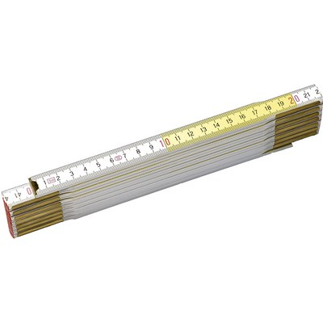

Protocollo misurazioni¶
Protocollo per effettuare corrette misurazioni di parametri ambientali.
Definizioni¶
Campionamenti e osservazioni¶
Campionamento è il processo per ottenere una discretizzata sequenza di misure di una quantità.
Campione è una singola misura, tipicamente una di una serie di letture di un sistema di sensoristica.
Una osservazione (misurazione) è il risultato del processo di campionamento. Nel contesto di analisi di serie, un'osservazione è derivato da un numero di campioni.
Data Level¶
Dati Level I , sono le letture dirette degli strumenti espresse in appropriate unità fisiche e georeferenziate
Dati Level II, dati riconosciuti come variabili meteorologiche; possono essere ottenuti direttamente da strumenti o derivati dai dati Level I
Dati Level III sono quelli contenuti in dataset internamente consistenti, generalmente su grigliato.
I dati scambiati a livello internazionale sono livello II o livello III
Taratura e calibrazione¶
la taratura è un'operazione che permette di definire le caratteristiche metrologiche di uno strumento, allo scopo di definirne la precisione; la calibrazione ha come obiettivo quello di rendere lo strumento più accurato e spesso, conseguentemente, migliorarne la precisione
La taratura¶
La taratura può essere usata per la determinazione delle caratteristiche metrologiche dello strumento (es. accuratezza, ripetibilità, riproducibilità, linearità, ecc.) necessari per definirne la funzionalità, o per verificarne la rispondenza a dei requisiti. Inoltre permette di sapere qual è la variazione del valore della grandezza.
La calibrazione¶
l'insieme di operazioni svolte su un sistema di misura, affinché esso fornisca indicazioni prescritte in corrispondenza di determinati valori di una grandezza da sottoporre a misurazione
Metodologia¶
a confronto, dove una medesima grandezza viene contemporaneamente letta dallo strumento in calibrazione e da quello campione; a sostituzione, dove il campione genera direttamente la grandezza di riferimento che viene fatta misurare allo strumento in calibrazione;
Criteri generali per la scelta del sito¶
La stazione meteorologica deve sorgere in un luogo piano e libero, possibilmente il suolo deve essere coperto da un tappeto erboso da cui vanno eliminate erbacce e cespugli. Il taglio della copertura erbosa deve essere frequente in modo da tenere l'erba uniformemente bassa; l'erba tagliata deve essere asportata per evitare l'effetto pacciamante della stessa e le conseguenti modificazioni del regime di temperatura ed umidità del terreno. E' sempre sconsigliabile lastricare di cemento o asfaltare o coprire con pietre o ghiaia il terreno del sito; in tale condizione infatti il calore riverberato altera di diversi gradi la temperatura dell'aria falsando le misure. Se non vi fossero altre possibilità , in caso di montaggio su terrazzo si consiglia di predisporre sotto la capannina un ampio riquadro di terreno inerbito contenuto in apposito recipiente . Il parco strumenti dovrebbe situarsi ad una distanza minima pari 4 – 8 volte l'altezza degli ostacoli esistenti (alberi, siepi, edifici, muri etc.). Non devono esistere ostacoli che creino ombra ; brevi periodo di ombreggiamento al sorgere ed al tramontare del sole. La stazione ideale deve essere posta in un luogo realmente rappresentativo delle condizioni naturali della regione agricola o urbana considerata, ma non sempre nella ricerca dei siti per stazioni meteo ambientali è possibile raggiungere il completo rispetto di queste condizioni. In queste condizioni è consigliabile ricercare le migliori condizioni possibili avendo l'accortezza di documentare dettagliatamente le particolarità della collocazione della strumentazione
Temperatura e umidità¶
SHIELDS¶
La capannina meteorologica¶
La capannina solitamente di legno (scarsa conducibilità termica) e colorata con vernice bianca riflettente (minima assorbimento di radiazione); inoltre è realizzata in modo da garantire la circolazione dell'aria all'interno. Per evitare l'effetto della radiazione infrarossa emessa dal terreno, la capannina deve avere sulla base inferiore una doppia schermatura. La disposizione della capannina, con la porta disposta verso nord, evita che l'insolazione diretta penetri fino ai sensori di temperatura durante l'osservazione / manutenzione.
Instructions for Building an Instrument Shelter¶
The instrument shelter should be constructed of approximately 2 cm thick White Pine or similar wood and painted white, inside and out. A lock should be installed to prevent tampering with the instruments. Mounting blocks should be installed on the interior to insure that the max/min thermometer does not touch the back wall. The parts should be screwed together or glued and nailed. The plans are specified in metric units. Therefore, you may need to make minor adjustments to dimensions depending on the local standard dimensions of wood in your region. It is easier to purchase prefabricated louvered panels, and they are usually available for purchase. The primary criteria for constructing louvres is that they provide for ventilation of the instrument shelter while preventing sunlight and rain from entering directly. To prevent sunlight from entering the shelter we suggest that each louvre slat overlap slightly with adjacent slats. See Figure AT-IC-1.

There should also be a gap between slats of approximately 1 cm, and the slat angle should be roughly 50-60 degrees from horizontal. For shelter mounting instructions, see image:

Radiation Shield¶
A radiation shield or screen should be designed to provide an enclosure with an internal temperature that is both uniform and the same as that of the outside air. It should completely surround the thermometers and exclude radiant heat, precipitation and other phenomena that might influence the measurement. Screens with forced ventilation, in which air is drawn over the thermometer element by a fan, may help to avoid biases when the microclimate inside the screen deviates from the surrounding air mass. Such a deviation only occurs when the natural wind speed is very low (< 1 m s–1). When such artificial ventilation is used, care should be taken to prevent the deposition of aerosols and rain droplets on the sensor which decrease its temperature towards the wet-bulb temperature. As a shield material, highly polished, non-oxidized metal is favourable because of its high reflectivity and low heat absorption. Nevertheless, thermally insulating plastic-based material is preferable because of its simple maintenance requirements. Thermally insulating material must be used if the system relies on natural ventilation.
Louvred screens¶
Most of the numerous varieties of louvred screen rely on natural ventilation. The walls of such a screen should preferably be double-louvred and the floor should be made of staggered boards, but other types of construction may be found to meet the above requirements. The roof should be doublelayered, with provisions for ventilation of the space between the two layers. In cold climates, owing to the high reflectivity of snow (up to 88 per cent), the screen should also have a double floor. At the same time, however, the floor should easily drop or tilt so that any snow entering the screen during a storm can be removed. The size and construction of the screen should be such that it keeps the heat capacity as low as practicable and allows ample space between the instruments and the walls. The latter feature excludes all possibility of direct contact between the thermometer sensing elements and the walls, and is particularly important in the tropics where insolation may heat the sides to the extent that an appreciable temperature gradient is caused in the screen. Direct contact between the sensing elements and the thermometer mounting should also be avoided. The screen should be painted both inside and outside with white, non-hygroscopic paint. When double walls are provided, the layer of air between them serves to reduce the amount of heat that would otherwise be conducted from the outer wall to the inner enclosure, especially in strong sunshine. When the wind is appreciable, the air between the walls is changed continually so that the conduction of heat inwards from the outer walls is further decreased. The free circulation of air throughout the screen helps the temperature of the inner wall adapt to ambient air changes. In this way, the influence of the inner wall upon the temperature of the thermometer is reduced. Also, the free circulation of air within the screen enables the thermometer to follow the ambient air changes more quickly than if radiative exchanges alone were operative. However, the air circulating through the screen spends a finite time in contact with the outer walls and may have its temperature altered thereby. This effect becomes appreciable when the wind is light and the temperature of the outer wall is markedly different from the air temperature. Thus, the temperature of the air in a screen can be expected to be higher than the true air temperature on a day
Temperatura dell'aria¶
Definition¶
WMO (1992) defines temperature as a physical quantity characterizing the mean random motion of molecules in a physical body. Temperature is characterized by the behaviour whereby two bodies in thermal contact tend to an equal temperature. Thus, temperature represents the thermodynamic state of a body, and its value is determined by the direction of the net flow of heat between two bodies. WMO defines air temperature as “the temperature indicated by a thermometer exposed to the air in a place sheltered from direct solar radiation”.
Measurement Units and scales: Kelvin
Range: 233.15 K / 323.15 K
Resolution: 0.1 K
Uncertainty: 0.5 K
time constant: 20s
Sampling: 1Hz
Output observation Averaging time: 60s
Collocazione degli strumenti¶
I sensori di temperatura vengono racchiusi entro involucri che proteggono dalla radiazione diretta, generalmente ventilati anche in modo artificiale dalle cui prestazione dipende in gran parte il rendimento dei sensori stessi. L'altezza del sensore dal terreno deve essere compresa tra 180 cm e 200 cm.
Umidità dell'aria¶
Definition¶
The simple definitions of the most frequently used quantities in humidity measurements are as follows:
- Dewpoint temperature Td: The temperature at which moist air saturated
with respect to water at a given pressure has a saturation mixing ratio equal
to the given mixing ratio;
- Relative humidity U: The ratio in per cent of the observed vapour
pressure to the saturation vapour pressure with respect to water at the same temperature and pressure;
Measurement Units and scales¶
Dew Point Temperature |
Kelvin |
Relative Humidity |
percent % |
Range¶
Dew Point Temperature |
233.15 K / 303.15 K |
Relative Humidity |
0 - 100 |
Resolution¶
Dew Point Temperature |
0.1 K |
Relative Humidity |
2% |
Uncertainty¶
Dew Point Temperature |
0.5 K |
Relative Humidity |
5% |
time constant¶
Dew Point Temperature |
20 s |
Relative Humidity |
40 s |
Sampling¶
10 Hz
Output observation Averaging time¶
60 s
Collocazione degli strumenti¶
I sensori di umidità vengono racchiusi entro involucri che proteggono dalla radiazione diretta, generalmente ventilati anche in modo artificiale dalle cui prestazione dipende in gran parte il rendimento dei sensori stessi. L'altezza del sensore dal terreno deve essere compresa tra 180 cm e 200 cm.
Osservazioni manuali¶
All'interno del progetto RMAP vengono archiviate misure manuali delle seguenti grandezze:
altezza del manto nevoso (total snow depth)
visibilità (visibility)
tempo presente (current weather)
nel seguito viene data una descrizione della metodologia da seguire per produrre misure corrette di tali grandezze.
Altezza del manto nevoso (total snow depth)¶
Quando fare la misura¶
L'altezza totale del manto nevoso va fatta in due casi:
In presenza di manto nevoso (che verrà misurato in cm)
Quando è stata prevista una nevicata in un intorno del punto di osservazione, ma nel punto di osservazione non è presente manto nevoso (misura pari a 0 cm)
La misurazione di altezza nulla del manto è stata introdotta recentemente nei disciplinari WMO per distinguere il dato mancante dall'assenza di manto nevoso. In precedenza infatti il dato mancante veniva considerato automaticamente come indicativo di assenza del manto, introducendo un elemento di ambiguità che in alcuni casi ha portato ad errori di valutazione dell'estensione del manto nevoso. Questo errore in alcuni casi si è propagato su tutti i prodotti osservativi a valle fino ad alterare le analisi globali di ECMWF.
Collocazione del sito di misura¶
Il sito di misura deve consistere di una superficie piana regolare non soggetta ad accumuli anomali rispetto all'area circostante. Il sito quindi deve essere sufficientemente lontano da alberi, edifici, zone di passaggio. In particolare la distanza da ostacoli rilevanti, come edifici o alberi, dovrebbe essere pari al doppio dell'altezza degli ostacoli stessi.
In genere viene consigliata la collocazione sul sito di misura di una tavoletta di legno o compensato levigata e di colore bianco, di circa mezzo metro di lato, simile a quella nella seguente figura e detta Tavoletta Nivometrica. La tavoletta deve essere posta al livello del terreno.

In assenza di tale strumento, la misura si può fare su una qualsiasi superficie piana, possibilmente non metallica e non di colore scuro. Si sconsiglia la misura su un prato, dal momento che la presenza di erba sotto la neve può alterare la misura della altezza totale del manto nevoso.
In generale nel caso non si usi la tavoletta, si consiglia di fare più misure del manto nevoso in più punti nel raggio di qualche metro e di ottenere così il valore della misura finale come media dei campionamenti.
Strumenti di misura¶
La misura del manto nevoso va fatta utilizzando un righello rigido di lunghezza sufficiente o, meglio ancora, un metro ripiegabile di legno o di plastica, tipicamente utilizzato nei cantieri o dai falegnami, simile a quello in figura.
Come fare la misura¶
Quando si fa la misura bisogna seguire le seguenti procedure:
fare attenzione che il righello sia sempre in posizione perpendicolare al piano di misura
rilevare la misura ponendo sempre gli occhi più vicini possibili al punto di misura, così da evitare errori di parallasse (vedi figura nel seguito).


Visibilità¶
La misura di visibilità va fatta possibilmente individuando una serie di oggetti o ostacoli (case gruppi di alberi, cartelli stradali, ecc...) a distanza nota dall'osservatore. L'osservazione va semper fatta all'aperto, mai attraverso i vetri di una finestra o di una vetrina e senza usare di strumenti ottici (binocoli, telescopi, o simili). L'osservatore dovrebbe essere posto ad una altezza normale dal suolo (1.5 m circa) e non in cima a torri o balconi. La visibilità dovrebbe essere rilevata in diverse direzioni. Il valore più basso tra queli rilevati rappresenta la misura finale di visibilità.
Tempo presente¶
Quando si seleziona il tipo di "Tempo presente" bisogna procedere alla selezione di una voce tra quelle riportate nell'elenco. L'elenco è ordinato in base all'intensità e quindi alla rilevanza del fenomeno osservato: fenomeni più intensi o più rilevanti sono più in basso nell'elenco. Man mano ci si sposta in alto nell'elenco, si trovano eventi meno rilevanti. L'osservatore dovrà selezionare l'evento osservato partendo dal basso e potrà inserirne uno solo. Utilizzando questa procedura, inserirà automaticamente l'evento più significativo.